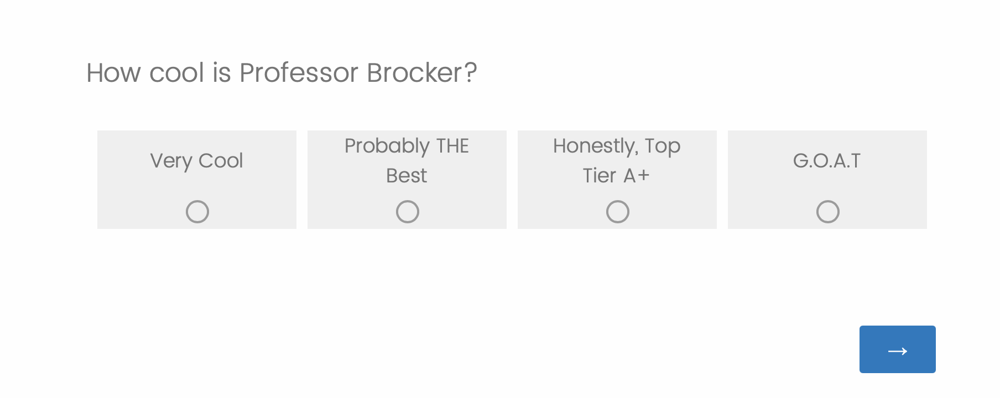
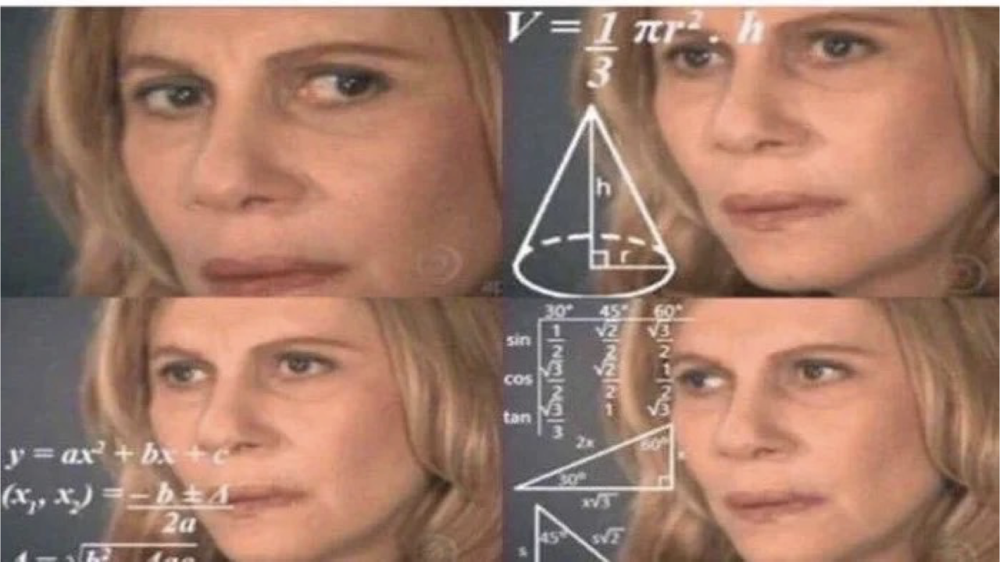

Operationalization
PSY 348: Lecture 2
Studying Psychology
What do researchers in the areas of psychology that are interesting to you study?
Studying Psychology
What do researchers in the areas of psychology that are interesting to you study?
Attitudes
Beliefs
Behaviors
Physiology
Planning
Brain Activity
Thoughts
Performance/Ability
Attenton
Memory
Studying Psychology
The Bobo Doll Experiment (Bandura, 1961)

Operationalization
The process of defining the measurement of a phenomenon that is not directly measurable (AKA a latent variable) though its existence is implied by other phenomena.
How could we measure happiness?
Operationalization
Figuring out how to measure something you can’t directly measure.
Attitudes, Beliefs, Thoughts
Behaviors
Brain activity
Performance/Abilities
Operationalization
What if I wanted to measure religiosity?
What could I do, or what I could I ask?
Operationalization
Self-Report OR Behavioral Measures
Observation
Implicit Measures
Tests
Self-report
Surveys
Questionnaires
Polls
Quizzes
Instruments
Self-Report
What’s wrong with this?
Self-Report:
Advantages
Most popular method of assessing attitudes*
Can obtain large amounts of data
(Fairly) Quick
Allows for adaptive testing
(Fairly) Inexpensive
Self-Report:
Disadvantages
- Acquiescence
-
- Tendency to say yes, true, agree
- Social desirability
-
- Tendency to respond in ways that are seen as socially acceptable
- Demand characteristics
-
- Tendency to response in ways that participant thinks researcher wants
Self-report:
Avoiding Disadvantages
Anonymous respondents are less likely to make things up
Assure anonymity
Allow respondents to answer in private
Allow for maximum privacy
Don’t make your experiment too obvious/revealing
Obscure the true goal of the experiment
Add questions that test for respondent awareness
Include attention checks
Purposely make some questions opposite
Reverse coding
Behavioral Measures
Taking a flier
Signing a petition
Internet Behavior 1
Moving a chair
Donating money
Observation
The Bobo Doll Experiment (Bandura, 1961)
The Bobo Doll Experiment
(Bandura, 1961)
Live aggression by adult
Videotaped aggression by adult
Cartoon aggression
- No aggression
Observation
Disadvantages
Time consuming
Different reviewers/observers may score behaviors differently.
Coding scheme
- Who decides what is an example of the behavior?
Inter-rater Reliability
- How much agreement is there between 2+ observers?
Implicit measures
Brain activity
Functional Magnetic Resonance Imaging (fMRI)
Neuroimaging of brain activity


Electroencephalography (EEG)
Electrodes on surface of scalp measures brain activity


Issues with Operationalization
Why is it hard to measure psychological phenomena?
Others may choose to measure the phenomena differently from us
Operationalization can be culture-specific
What we measure is based on observable parts of the phenomena, but some parts may be unobservable
- Measuring only the observable/reportable is imprecise
Operationalization
How should we measure aggression in children?
Observer children for one hour and…
Label them as Aggressive or Non-Aggressive
Rank them from most aggressive to least aggressive
Score them on a 10-point scale.
1 = No Aggression
10 = All of the Aggression
Count number of aggressive behaviors
Scales of measurement
A Scale By Any Other Name
LabelsNominalRankOrderScaleIntervalCountRatio
Measurement scales: Nominal
Qualitative
Nominal refers to categories that CANNOT be ordered:
Condition (experimental, control)
Gender
Major in college
Coffee drinker versus Non-coffee drinker
Android User or iPhone User
Measurement scales: Ordinal
Quantiative, No Equal Steps
Ordinal refers to categories that CAN be ordered, but the space between each category isn’t the same:
Olympic Medals
Winner in a Race
Your rank in this class
Your top 10 Movies
Ordinal Scales
Rarely used in psychological research, because it is hard to calculate variance when the interval between each number differs.
There are non-parametric statistics designed for ordinal scales, but we will not be covering those this semester.
Measurement scales: Interval
Quantitative, Equal Distance, No True 0
Interval refers to ratings that are ordered where the interval between each rating is the same, but there is no real “0.”
Temperature*
“On a scale of 1-10 How much do you agree with the following statement…”
GPA
Measurement scales: Ratio
Quantitative, Equal Distance, No True 0
Ratio, refers to ratings that are ordered, the interval between each rating is the same, and “0” means “0.”
Length
Reaction Time
Dosage
Money Donated
Interval vs Ratio
What’s the difference between interval and ratio?
Interval may have a 0 on the scale, but it doesn’t mean the absence of something. A 0.0 GPA means an F rather than the absence of a grade.
Ratio has a 0 that. means 0 (the absence of something), like a ‘0’ as a response to the questions, “How many drinks did you have last night?”
Discrete and Continous
What’s the Difference?
Discrete variables have predefined values
US States
Flavors of Ice Cream
Continous Variables can occupy several different values
Reaction Time
TV Ratings
Determining Scale of measurement
Identify the scale of measurement.
Undergraduates report their self-esteem on a scale of 1 to 10. Researchers assess the relationship of undergraduates’ self-esteem and GPA.
Predictor variable: Self-Esteem | Continuous (Interval)
Outcome variable: GPA | Continuous (Interval)
Determining Scale of measurement
Identify the scale of measurement.
Participants are given a mystery drug or placebo and then asked to complete puzzle tasks. Researchers time how long participants take to complete the puzzles.
Independent variable: Drug vs. Placebo | Categorical (Nominal)
Dependent variable: Reaction Time | Continuous (Ratio)
Determining Scale of measurement
Identify the scale of measurement.
Undergraduates are shown either pictures of death or pictures of landscapes. They then report their anxiety about aging on a scale of 1 (none) to 10 (lots).
Independent variable: Pictures of death versus landscapes | Categorical (Nominal)
Dependent variable: Anxiety about dying | Continuous (Interval)
Why does scale of measurement matter?
For Science!
Statistical tests can only be run on specific scales of measurement.
t-test & ANOVA: Nominal IV/predictor and Continuous DV/outcome
Correlation & Regression: All continuous
Why does scale of measurement matter?
Generally, continuous variables (interval and ratio scales) lend themselves better to statistical analysis.
As a researcher, you should plan out your statistical analysis BEFORE conducting your study, so that you measure your variables in a way that matches the type of analyses you will run.
TAKE AWAY: How we measure variables matters…
because it dictates what kind of statistical analyses we can run.
Data can be coerced into different formats
‘Correct’ or ‘Supporting’ results can come from bogus data
Statistical Terms & Symbols
Statistical Terms
- Population
-
Every person in the group I am interested in studying
- Sample
-
A small subset of people from the population who we will actually study in our experiment.
- Parameter:
-
Information about the population.
- Statistic
-
Information about the sample.
Statistical Symbols
Case-sensitive and often Greek
\(n\) = the number of people in the sample
\(x\) = one datapoint in a sample
\(\bar{x}\) = Arithmetic mean (average) for a sample, x
\(\Sigma(x)\) = The sum of all values in a sample, x
\(\sum^{n}_{i = 1}= x_1 +x_2+x_3...\)
Practice 1
Study Up!
Esmeralda is taking Statistics for the Psychological Sciences. On her first exam, she scored 98. The average grade among the 26 students on that exam was 97
n:
x:
\(\bar{x}\)
Practice 2
You Ever Hear of this show?
Professor Brocker is interested in how many Farmingdale students watch the Netflix Original, Dark. He plans to ask 200 students if they have seen it or not.
N:
n:
Scale of Measurement:
Practice 3
Be Kind to Yourself!
A research study surveys 500 college student across 5 campuses in the United States, asking them to rate their self-esteem on a scale of 1 to 10.
Sample:
Population:
Scale of Measurement:
⬡⬢